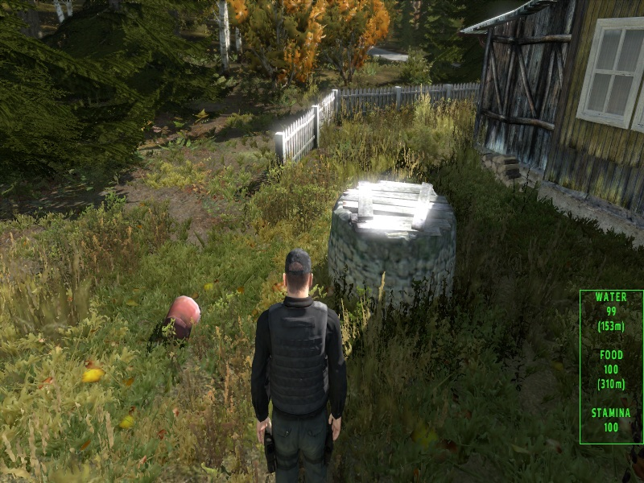
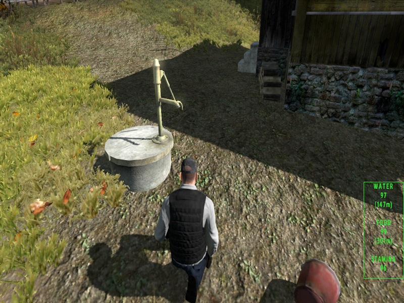
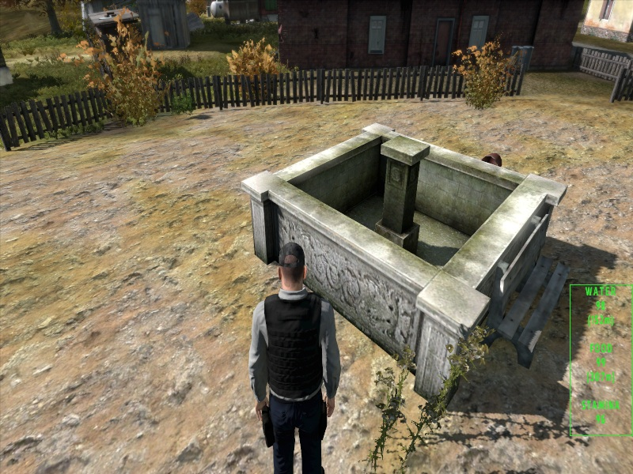
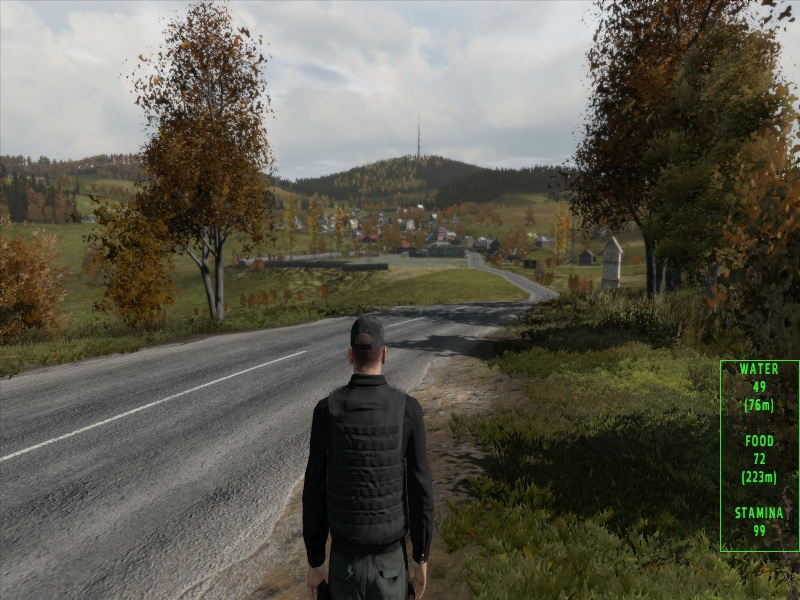
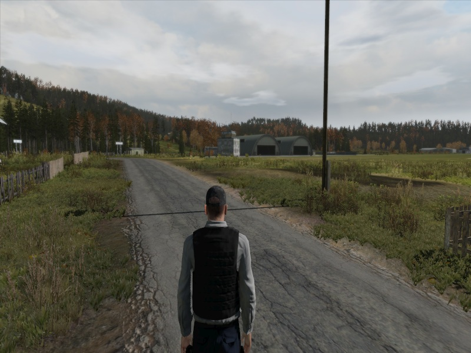
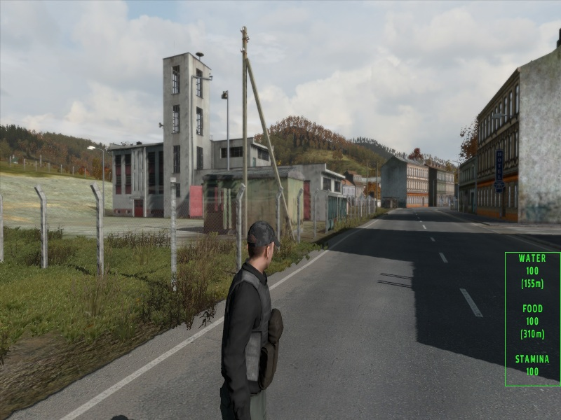
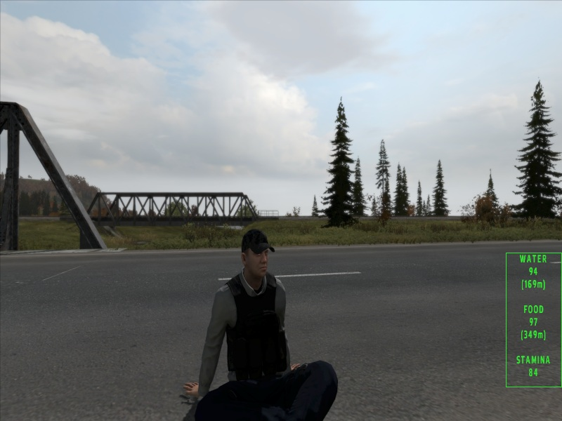
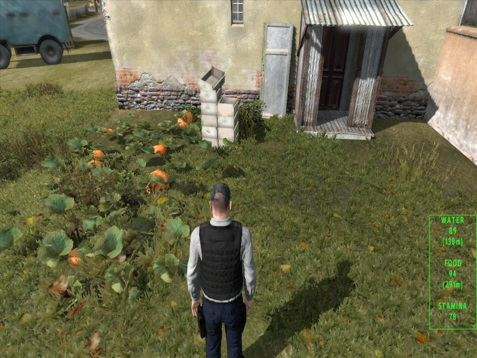
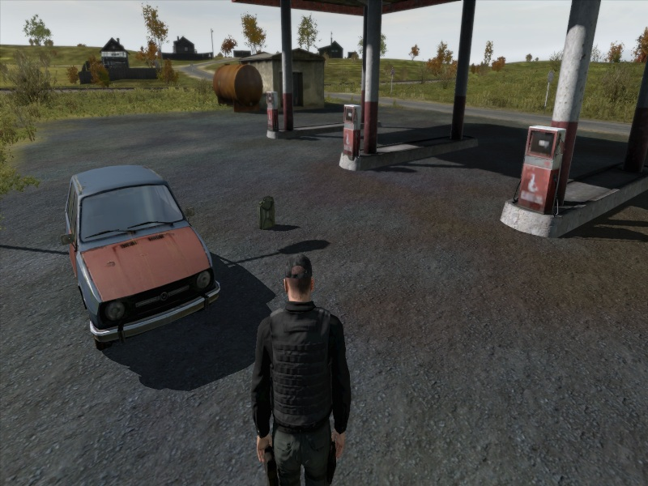
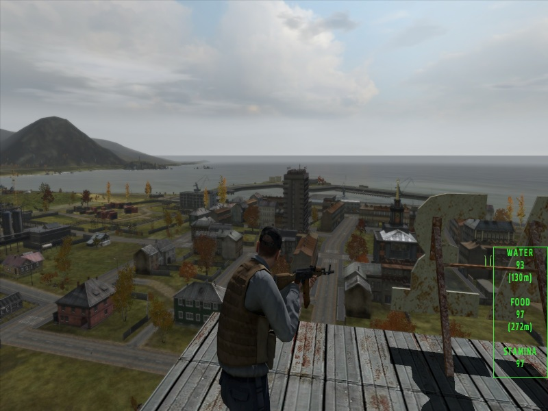

💧 Water




Water comes from the world itself — pumps, wells, gold pumps and fountains.
game
Explore Chernarus, where thirst drives you…
for water — or for blood.
Original ArmA 2 Chernarus experience
225 km² of open terrain — forests, roads, cities and villages




Nothing new was added.
What was already there — is now usable.



Water comes from the world itself — pumps, wells, gold pumps and fountains.

Food is found directly in the world — like pumpkins growing in fields.

Vehicles can be maintained using resources found in the world.

Weapons are still there — just like before.
Other players are part of survival.
Sometimes they help.
Sometimes they don’t.
1. Install
ArmA 2: Operation Arrowhead (Steam)
2. Start
Launch without BattlEye
3. Enable expansions
Operation Arrowhead
British Armed Forces
Private Military Company
Army of the Czech Republic
4. Join
Multiplayer → filter: thirst
Walking allows longer travel.
Running drains you faster.
Roads are easier than rough terrain.
Version 0.2
• Roads improved
• Slower hunger/thirst
• Faster stamina regen
• HUD simplified